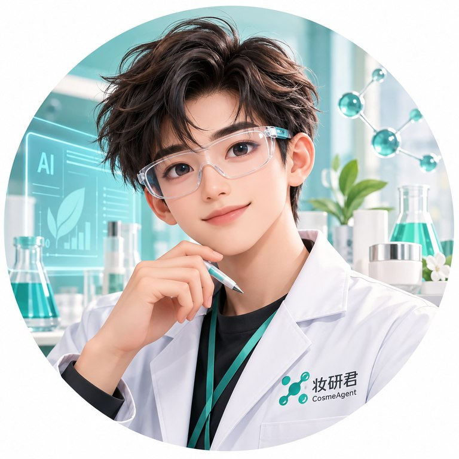

01
配方研发
探索配方资料整理、成分信息比对与研发记录梳理，让思路和数据更清晰。
美妆行业，遇见新的可能
嗨，我是妆研君。
把美妆行业的专业知识，连接到 AI 的新能力。
从研发灵感到日常协作，陪你一起把事情做好。
品牌官网已就绪 · 产品能力筹备中

A LITTLE SCIENCE. A LITTLE POSSIBILITY.
01 / 认识妆研君
懂行业的 AI，
从理解你的工作开始。
妆研君是一个面向美妆行业的
拟人化 AI Agent 品牌。
美妆研发和运营的日常，总有许多需要查证、整理与连接的信息。我们希望让专业知识更容易被找到，让业务系统更容易协作，让你有更多精力投入真正重要的判断。
以 Skill 沉淀工作方法，以 MCP 连接信息与工具，以 AI Agent 串联具体任务。从一个小场景开始，逐步探索更贴近行业的 AI 搭档。
从真实业务问题出发
关注来源、版本与边界
专业判断始终由你把关
专业支持 / ATLAS
方图检测
您身边值得信赖的化妆品合规伙伴。
从真实的行业需求出发，让专业经验与 AI 能力相连接。方图检测专注化妆品申报、检测与合规服务，为妆研君的行业应用探索提供专业支持。
依托成分数据库与标准化审核体系，为品牌方提供高效、精准、可追溯的合规支持。
走进方图检测 （新窗口）广东方图检测科技有限公司
特殊化妆品申报、安全评估与检测外包，围绕产品全链条提供合规服务。
面向欧盟、东盟、美国等市场，提供出口合规支持。
提供防脱、抗皱、美白、祛痘等可视化功效检测服务。
以上为方图检测的专业服务介绍。妆研君的 Skill、MCP 与 AI Agent 产品仍处于规划中。
02 / 服务领域
围绕五个核心领域探索 AI 应用。
以下为拟支持的场景，具体范围以未来发布为准。
探索配方资料整理、成分信息比对与研发记录梳理，让思路和数据更清晰。
探索 INCI、原料特性、技术资料与供应商信息的关联整理，为原料研究提供线索。
探索实验室系统连接、样品与检测记录查询，帮助串联分散的实验数据。
探索法规资料检索、适用范围梳理与证照清单管理，辅助准备需要专业复核的材料。
探索采购需求整理、供应商资料对照与协作信息归集，让上下游沟通更有条理。
03 / 产品与能力
三种能力形态，一个行业方向。
产品均处于规划中，尚未开放使用。
计划将配方资料整理、原料研究等工作拆解为可复用的任务指南，保留清晰步骤与复核要点。
计划通过 Model Context Protocol 连接经授权的数据与工具，探索实验室、原料资料等信息的查询与协作。
计划将行业知识、任务方法与工具连接组合起来，辅助处理连续工作，让结果更容易由专业人员检查。
从小场景验证，再逐步连接系统。以上为产品方向说明，不构成已上线功能或交付时间承诺。
04 / 一起探索
你可能正在整理配方资料，寻找原料信息，
也可能希望让实验室系统更好地连接 AI。
欢迎从一个真实的工作问题开始交流。
交流时可以聊聊：你的业务场景、当前难点，以及希望改善的那一步。
一些你可能关心的事
目前是品牌介绍与产品规划阶段，Skill、MCP 和 AI Agent 均尚未开放使用。后续会在官网更新具体产品范围、使用方式与可用状态。
AI 可能产生错误、遗漏或过时信息。配方安全性、实验结论、法规适用、证照申报和采购决策，都需要具备相应能力的人员依据有效资料独立复核。
这是一个静态品牌官网，没有资料上传、账号或在线提交功能，也没有使用分析或广告追踪脚本。请勿通过公开渠道发送未脱敏的配方、检测数据、个人信息或商业机密。未来产品的数据处理方式将另行说明。